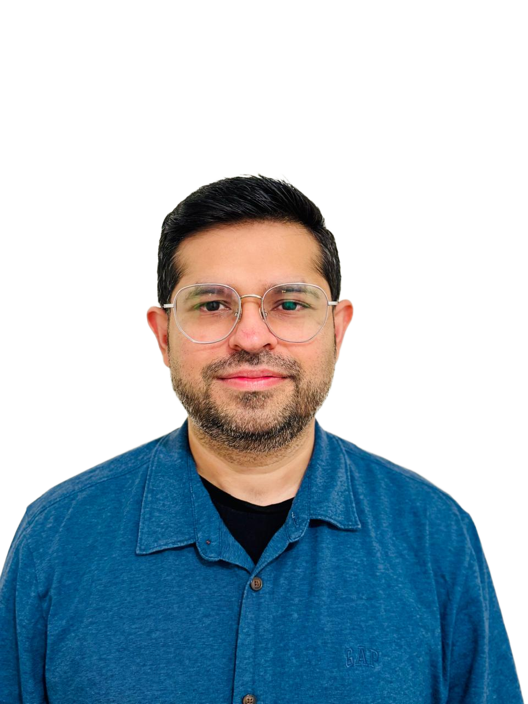

Turning complex problems into simple, usable digital experiences — across global platforms, teams, and markets.

I'm Sumit Arora, and I help turn complex problems into simple, usable digital experiences. With over a decade as a Business Analyst and 5+ years in UX design, I create products that users love, scale globally, and drive real business impact.
I thrive at the intersection of people, process, data, and technology — turning complex workflows into intuitive, user-friendly solutions. My experience spans global platforms, most notably at IKEA, where I designed scalable localization workflows across 60+ markets, simplified fragmented processes, and introduced standardized design patterns that improved collaboration and efficiency.
I enjoy working in collaborative, fast-paced environments, partnering with product managers, developers, and business stakeholders to ensure solutions are usable, feasible, and aligned with strategy. Combining my analytical background with a human-centered design approach helps me deliver products that truly work for people — and for business.
I'm always open to conversations about meaningful work — whether that's a new role, a collaboration, or just an interesting design challenge.